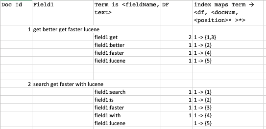
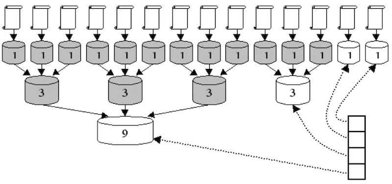
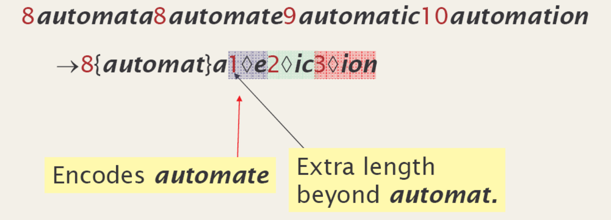
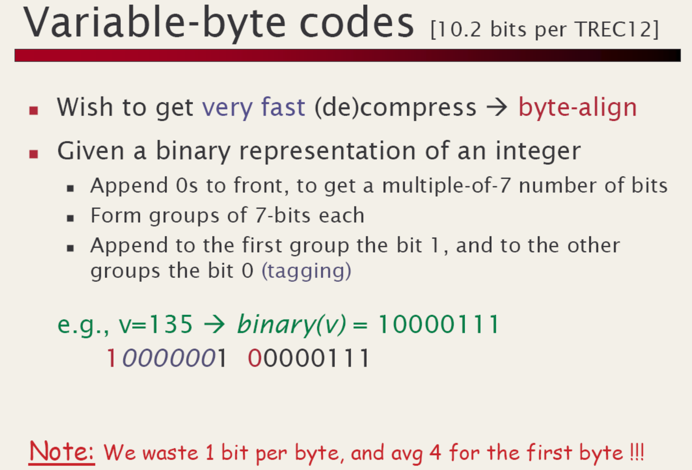
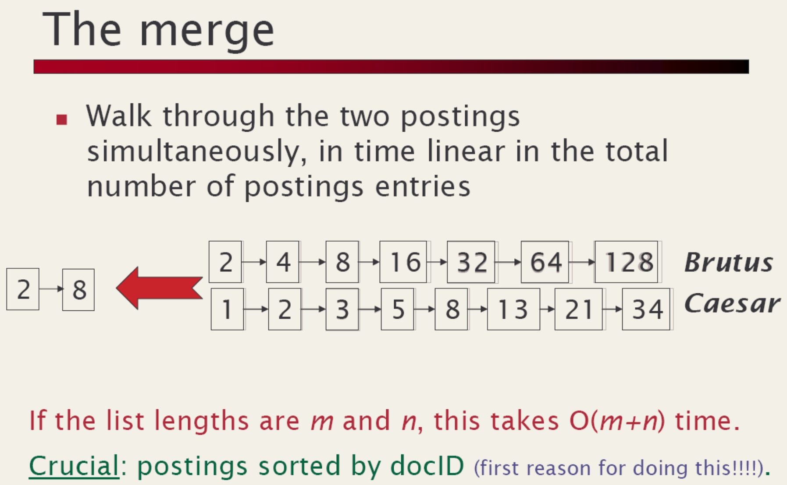
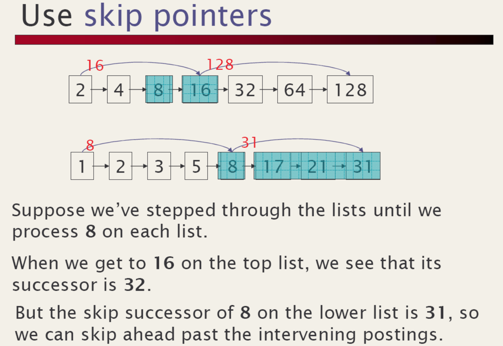
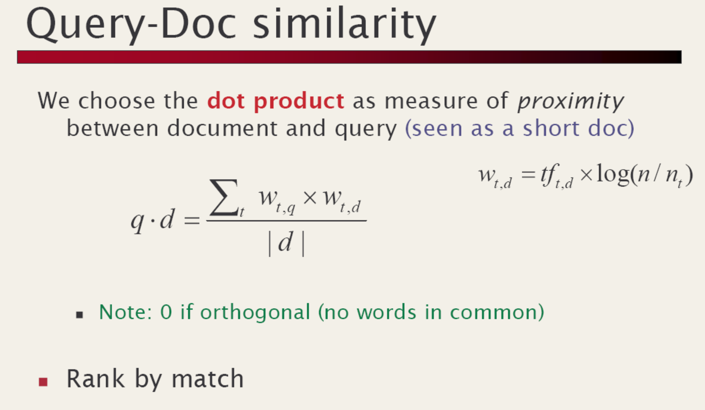

Lucene - quick look inside
Main points
Writing documents
- Index is represented by
Directoryobject. Could be on file, in memory, database etc IndexWriterwrites documents into index.IndexWriterConfigprovides writer configuration.Analyzeris a very important part of configuration, both for writing and reading. See http://localhost:63342/code-snippets/lucene-core-7.4.0-javadoc.jar/org/apache/lucene/analysis/Analyzer.html- Documents are the unit of indexing and search. A Document is a set of fields. Each field has a name and a textual value.
Searching documents
- IndexReader provides an interface for accessing a point-in-time view of an index.
- IndexSearcher implements search over a single IndexReader.
- To search an index:
- Instantiate QueryParser. This object can be reused multiple times for various queries. When creating QueryParser provide an analyzer similar to how we did for writing an index
- Create a Query using QueryParser represented by for using with query
- Submit query instance to
indexSearcher.search()and process results.
Lucene API
- org.apache.lucene.document
- org.apache.lucene.analysis
- org.apache.lucene.index
- org.apache.lucene.search
Package: org.apache.lucene.document
- A Document is a sequence of Fields.
- A Field is a
- name is the name of the field, e.g., title, body, subject, date, etc.
- value is text.
- Field values may be stored, indexed or analyzed (and, now, vectored).
Example
Document makeDocument(String title, String body) { Document doc = new Document(); doc.add(new TextField("title", title, Field.Store.YES)); doc.add(new TextField("body", body, Field.Store.YES)); return doc; }
Package: org.apache.lucene.analysis
- An Analyzer is a TokenStream factory.
- A TokenStream is an iterator over Tokens.
- input is a character iterator (Reader)
- A Token is tuple
- text (e.g., “pisa”).
- type (e.g., “word”, “sent”, “para”).
- start & length offsets, in characters (e.g, <5,4>)
- positionIncrement (normally 1)
- standard TokenStream implementations are
- Tokenizers, which divide characters into tokens and
- TokenFilters, e.g., stop lists, stemmers, etc.
Example
public class ItalianAnalyzer extends Analyzer { private Set stopWords = StopFilter.makeStopSet(new String[] {"il", "la", "in"}; public TokenStream tokenStream(String fieldName, Reader reader) { TokenStream result = new WhitespaceTokenizer(reader); result = new LowerCaseFilter(result); result = new StopFilter(result, stopWords); result = new SnowballFilter(result, "Italian"); return result; } }
Package: org.apache.lucene.index
- Term is
<fieldName, text> - Index maps
Term → <df, <docNum, <position>* >*>
e.g.“content:pisa” → <2, <2, <14>>, <4, <2, 9>>> - Term vectors
- Example

Example
IndexWriter writer = new IndexWriter("index", new ItalianAnalyzer()); File[] files = directory.listFiles(); for (int i = 0; i < files.length; i++) { writer.addDocument(makeDocument(files[i])); } writer.close();
Some Inverted Index Strategies
| Strategy | Pro | Cons |
|---|---|---|
| Batch-based: use file-sorting algorithms (textbook) | - fastest to build - fastest to search |
slow to update |
| B-tree based: update in place http://lucene.sf.net/papers/sigir90.ps |
fast to search | - update/build does not scale - complex implementation |
| Segment based: lots of small indexes | - fast to build - fast to update |
slower to search |
Lucene's Index Algorithm
- two basic algorithms
- make an index for a single document
- merge a set of indices
- incremental algorithm:
- maintain a stack of segment indices
- create index for each incoming document
- push new indexes onto the stack
- let b=10 be the merge factor; M=∞;
Example
for (size = 1; size < M; size *= b) { if (there are b indexes with size docs on top of the stack) { pop them off the stack; merge them into a single index; push the merged index onto the stack; } else { break; } }
Todo
Need to check/elaborate
- optimization: single-doc indexes kept in RAM, saves system calls
Note
- average
b*logb(N)/2indexes- N=1M, b=2 gives just 20 indexes
- fast to update and not too slow to search
- batch indexing w/ M=∞, merge all at end
- equivalent to external merge sort, optimal
- segment indexing w/ M<∞
Indexing Diagram
- b = 3
- 11 documents indexed
- stack has four indexes
- grayed indexes have been deleted
- 5 merges have occurred

Index Compression
For keys in Term -> ... map, use technique from Paolo's slides:
4th solution: front coding
Idea: sorted words commonly have long common prefix - stored diffrences only wrt the first term in a block og k

For values in Term -> ... map, use technique from Paolo's slides:

VInt Encoding Example
| Value | First byte | Second byte | Third byte |
|---|---|---|---|
| 0 | 00000000 | ||
| 1 | 00000001 | ||
| 2 | 00000010 | ||
| ... | |||
| 127 | 01111111 | ||
| 128 | 10000000 | 00000001 | |
| 129 | 10000001 | 00000001 | |
| 130 | 10000010 | 00000001 | |
| ... | |||
| 16,383 | 11111111 | 01111111 | |
| 16,384 | 10000000 | 10000000 | 00000001 |
| 16,385 | 10000001 | 10000000 | 00000001 |
| ... |
This provides compression while still being efficient to decode.
Package: org.apache.lucene.search
- primitive queries:
- TermQuery: match docs containing a Term
- PhraseQuery: match docs w/ sequence of Terms
- BooleanQuery: match docs matching other queries.
e.g.,+path:pisa +content:“Doug Cutting” -path:nutch - new: SpansQuery
- derived queries:
- PrefixQuery, WildcardQuery, etc.
Example
Query pisa = new TermQuery(new Term("content", "pisa")); Query babel = new TermQuery(new Term("content", "babel")); PhraseQuery leaningTower = new PhraseQuery(); leaningTower.add(new Term("content", "leaning")); leaningTower.add(new Term("content", "tower")); BooleanQuery query = new BooleanQuery(); query.add(leaningTower, Occur.MUST); query.add(pisa, Occur.SHOULD); query.add(babel, Occur.MUST_NOT);
Search algorithms
From Paolo's slides:

Lucene's Disjunctive Search Algorithm
- described in http://lucene.sf.net/papers/riao97.ps
- since all postings must be processed
- goal is to minimize per-posting computation
- merges postings through a fixed-size array of accumulator buckets
- performs boolean logic with bit masks
- scales well with large queries
Todo
draw a diagram to illustrate?
Lucene's Conjunctive Search Algorithm
From Paolo's slides: 
Algorithm - use linked list of pointers to doc list - initially sorted by doc - loop - if all are at same doc, record hit - skip first to-or-past last and move to end of list
Scoring
From Paolo's slides:

- Is very much like Lucene's Similarity
Lucene's Phrase Scoring
- approximate phrase IDF with sum of terms
- compute actual tf of phrase
- slop penalizes slight mismatches by edit-distance